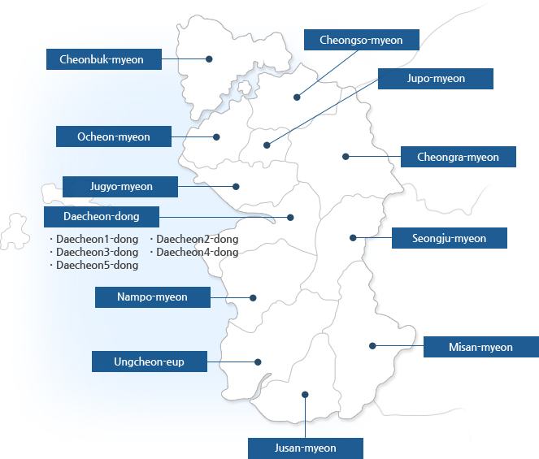
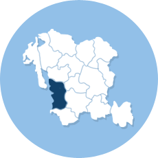

Administrative District
Boryeong City Public Administration Map


- 
Boryeong, Nampo, and Ocheon-gun were integrated into Boryeong-gun in 1914, and Boryeong-gun was divided into Boryeong-gun and Daecheon-si in 1986. In 1995, Daecheon-si and Boryeong-gun were integrated again. Currently, Boryeong-si is divided into 16 administrational district, such as Ungcheon-eup, Jupo-myeon, Ocheon-myeon, Cheonbuk-myeon, Cheongso- myeon, Cheongra-myeon, Nampo-myeon, Jusan-myeon, Seongju-myeon, Daecheon 1-dong, Daecheon 2-dong, Daecheon 3-dong, Daecheon 4-dong, and Daecheon 5-dong.